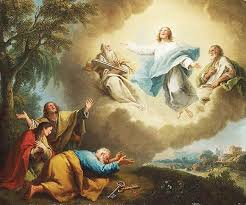

Հայոց մեջ Վարդավառը հնագույն արմատներ ունեցող տոներից է: Նրա մեջ հասցրել են արտացոլվել հայոց պատմության և ամառային տոնակատարությունների բոլոր դրվագներից' Նոյի պատմությունը, Հայկ ու Բելի ավանդազրույցը, Անահիտ-Աստղիկ դիցուհիների կերպարները, հնագույն նավասարդյան տոնակատարությունները, քրիստոնեական մեկնաբանությունները, բուն ժողովրդական պատկերացումները: Ավանդազրույցը պատմում է, թե երբ Նոյ Նահապետը ջրհեղեղից փրկվելով հասնում է Մասիսի գագաթը և այնտեղից իջնում Նախիջևան, այդ օրվանից սկսվում է հայոց Նավասարդ կոչվող ամիսը: Եվ որպեսզի ջրհեղեղի հիշատակը անմոռաց մնա մարդկանց մեջ, Նոյը պատվիրում է իր որդիներին իրար վրա ջուր լցնել: Եկեղեցական պաշտոնական տոնացույցում «Այլակերպություն» կամ «Պայծառակերպություն» կոչվող այս տոնը նշվում է Զատիկից 98 օր հետո, ուստի և 35 օրվա շարժականություն ունի և կարող է ընկնել հունիսի 28-ից մինչև օգոստոսի 1-ը որևէ կիրակի:...
Վարդավառը ուխտագնացությունների տոն էր, ընդ որում՜ ուխտագնացությունների համար ընտրվում էին գլխավորապես լեռները, ջրերի ակունքները: Օրինակ, Զանգեզուրում Վարդավառի ամենասիրված ուխտավայրը Խուստուփն էր, չնայած շատ էին գնում նաև Մեծ Իշխանասար, Մռավ, Մեծ Քիրսի, Դիզափայտ և ա յլ լեռնագագաթներին գտնվող սրբավայրերը: Խուստուփ այցելում էին թե Կապանի, թե Մեղրու շրջանի ամենահեռավոր գյուղերից անգամ, և այստեղ հազարավոր մատաղներ էին արվում: «Լեռն ամբողջովին կորչում էր ծխի մեջ, զուռնադավալը դղրդացնում էր շրջակայքը»: Շատերի համար ամենասիրված ուխտատեղը Մշո Մ.Կարապետի վանքն էր: Ոմանք յոթ տարի շարունակ յոթական շաբաթ' Համբարձումից մինչև Վարդավառ «Ս.Կարապետի» կամ «Օխտն անվան» պաս էին պահում: Յոթ տարին լրանալուց հետո գնում էին Մշո կամ Տարոնի Գլակա կամ Իննակնեան վանքը «Մշու Սուլթան» - Յովհաննու 201 Մկրտչի գերեզմանին ուխտ, որ նույն ինքը' Մշո Ս.Կարապետի վանքն էր:
Ընդհանրացված սովորույթ էր, որ մինչև Վարդավառ խնձոր չուտեին, այսպես կոչված «խնձորի պաս» էր, տարվա առաջին խնձորը ուտում էին Վարդավառին, ինչպես առաջին խաղողն ուտում էին Վերափոխման կամ Խաղողօրհնեքի տոնին: Որոշ վայրերում առաջին խնձորը վայելելը ուղեկցվում էր հատուկ նախապատրաստություններով: Այսպես, Շատախում երիտասարդները Վարդավառի շաբաթ երեկոյան դեզեր էին շինում, որոնցից մեկը պետք է մյուսներից մեծ լիներ: Մութն ընկնելուն պես հերթով սկսում էին վառել մանր դեզերը, որը տևելու էր մինչև լուսաբաց: Ահա այդ վառվող դեզերի մեջ խորովում էին խնձորը և ուտում:Թեհրանահայերը մինչև վերջերս Վարդավառին դուրս էին գալիս բացօթյա զբոսախնջույքների, որ կատարվում էին այգիներում: Այստեղ ձվածեղ էին սարքում, ասելով, «թող հոտը տա ծառերին, ծիրաններին...»:
Տեղի էին ունենում բազմաթիվ խաղեր, մասնավորապես' շատ ընդունված էին ձիարշավները, գոտեմարտերը, զանազան ճոճախաղերը, ճլորթին և, իհարկե, Վարդավառի առանձնահատուկ խաղերը' ջրախաղերը, որոնց ժամանակ Վասպուրականում անընդհատ գոչում էին «Վարդավա՜ռ, վարձքդ կատար»: Միմյանց կատակով ջուրը գցելը, միմյանց վրա ջուր լցնելը այս տոնին պարզապես խաղեր չէին, ա յլ Վարդավառի տոնի հանդիսավոր արարողություն, որն ուղղակի անհրաժեշտություն էր: «Ջուր էին նետում առանց հաշվի առնելու դիմացինի տարիքն ու հասարակական դիրքը: Ջուր էր շպրտում չխոսկան հարսը կեսրայրի վրա, իր կյանքում քավորի ներկայությունից փախչող սանամերը, եթե հաջողացներ քավորի վրա իր թաքստոցից ջուր շպրտել»: Վարդավառի կիրակի օրը, կեսօրից հետո, շատերին կարելի էր տեսնել ոտքից գլուխ թրջված, դույլը կամ թասը ձեռքին' պատրաստ յուրաքանչյուր հանդիպողի վրա լցնելու, անկախ նրանից' ծանո՞թ էր հանդիպողը, բարեկա՞մ, թե՞ անծանոթ մեկը, երիտասա՞րդ էր, թե՞ ծեր: Հատկապես երիտասարդները, առուների եզրին հավաքվելով, ժամեր շարունակ ուրախ կատակներով, ճիչ ու աղմուկով ջուր էին ցողում միմյանց վրա: Որոշ տեղերում նույնիսկ կեսօրից հետո տոնական հագուստը փոխում էին առտնին հագուստի' հանգիստ խղճով զվարճանալու համար: Ջուր ցանելուն շատ տեղերում ասում էին «վարդավառի տալ», «վարդավառ անել»: Մյուս հատկանշական վարդավառյան ծեսը աղավնի թռցնելու սովորույթն էր: Ողջ տարվա ընթացքում գուրգուրանքով, խնամքով պահված աղավնիները դուրս էին բերվում ասպարեզ, տոնական եռուզեռից, աղմուկից, երաժշտությունից, մարդկանց գունագեղ խմբերից խենթացած աղավնիները օդ էին ճախրում և ամառային կապուտակ երկնքի տակ, հանդիսականների հիացական բացականչությունների ներքո, ցույց էին տալիս իրենց տերերի աղավնի վարժեցնելու հմտությունն ու սեփական վարպետությունը: Որոշ վայրերում այս սովորույթն այնքան մեծ տեղ էր զբաղեցնում Վարդավառի տոնակատարության ժամանակ, որ ուրիշ ազգերի կողմից այն անվանվում էր «գյուվերին փանայիրի»' աղավնիների տոն: Որոշ հետազոտողներ այս սովորույթը նույնացնում են Նոյի կողմից արձակված աղավնիների պարբերական անդրադարձին: Այս տոնի զբոսախնջույքները գերադասելի էր կազմակերպել ջրերի ակունքներում, սարերում' աղբյուրների մոտ, հենց այնտեղ էլ կատարվում էին Վարդավառի զոհաբերությունները: Յուրաքանչյուր ընտանիք պարտավորված էր զգում այդ օրը մատաղ անել, հատկապես' գառ զոհաբերել:
Շատ հետազոտողներ գտնում են, որ Վարդավառը հայոց մեջ արմատավորվել է ի հիշատակ Նոյան Տապանի' Արարատ լեռան վրա նստելու: Ուրիշներն այն կապում են բերք ու բարիքի հովանավոր, մայրության Աստված Անահիտի և ջրերի դիցուհի Աստղիկ Աստվածուհու հիշատակների հետ: Ավելի ուշ, Գրիգոր Լուսավորչի սահմանած կանոնով, Վարդավառի տոնը քրիստոնեական եկեղեցին հայտարարել է Թաբոր լեռան վրա Քրիստոսի պայծառակերպության երևույթին նվիրված տոն, ինչի համար և այն պաշտոնապես կոչվում է Պայծառակերպության կամ Այլակերպության տոն: